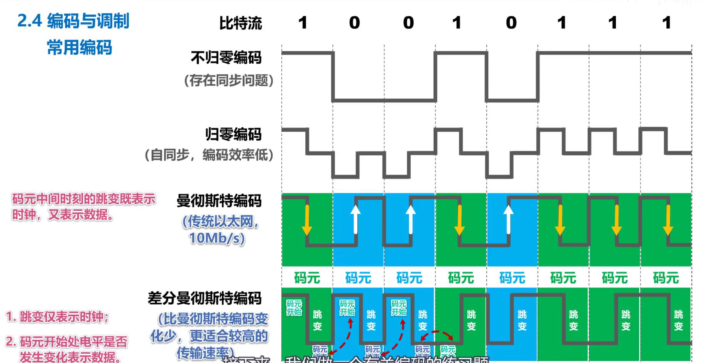

计算机网络-物理层
物理层考虑怎样才能在连接各计算机的传输媒体上传输数据比特流。 传输媒体： - 导引型传输媒体：双绞线、同轴电缆、光纤 - 非导引型传输媒体：微波通信 物理层协议主要任务： - 机械特性、电气特性、功能特性、过程特性 ## 一、传输媒体 分类： - 导引型传输媒体：双绞线、同轴电缆、光纤、电力线； - 非导引型传输媒体：无线电波、微波红外线、可见光； #### 导引型传输媒体 同轴电缆 - 基带同轴电缆和宽带同轴电缆 - 价格贵且布线不够灵活和方便。 双绞线 - 无屏蔽双绞线电缆和屏蔽双绞线电缆 - 绞合作用：①抵御部分来自外界的电磁波干扰；②减少相邻导线的电磁波干扰； 光纤 - 优点：①通信容量大；②传输损耗小，适合远距离传输；③抗雷电和电磁干扰性能好；④无串音干扰，保密性好；⑤体积小，重量轻； - 缺点：①割接需要专用设备；②光电接口价格较贵； 电力线 #### 非导引型传输媒体 无线电波 微波 - 直线传播； - 地面微波接力通信和卫星通信； 红外线 - 点对点无线传输，直线传输，传输速率低； 可见光 - 如LIFI通信，处于实验研究阶段； ## 二、传输方式 串行传输和并行传输 同步传输和异步传输 单向通信和双向通信 ## 三、编码和调制 基带信号（消息→数据→信号→基带信号） - 数字基带信号和模拟基带信号 - 数字信道和模拟信道 - 编码和调制 码元：在使用时间域的波形表示数字信号时，代表不同离散数值的基本波形； #### 常用编码 不归零编码与归零编码 - 不归零编码存在同步问题，不采用； - 归零编码每个码元传输结束后都要归零，编码效率低； 曼彻斯特编码 - 每个码元中间时刻发生跳变，跳变的方向表示0和1； 差分曼彻斯特编码 - 码元中间时刻的跳变表示时钟，码元开始处电平是否变化表示数据0和1；  #### 调制方法 基本调制方法：调幅、调频、调相 混合调制：正交振幅调制QAM - 基本调制方法一个码元只能表示一个bit信息；可以采用混合调制方法，相位和振幅一起调制； - 如QAM-16，有12种相位，可以调制出16种码元，每种码元对应4个bit（2^4=16）； ## 信道的极限容量 信号通过信道会产生失真，产生失真的原因主要有： - 码元传输速率、信号传输距离、噪声干扰、传输媒体质量等； 奈式准则：在假定的理想条件下，为了避免码间串扰，码元传输速率是有上限的。 - 理想低通信道的最高码元传输速率 = 2W Baud = 2W码元/秒； - 理想带通信道的最高码元传输速率 = W Baud = W码元/秒； - W：信道带宽（单位：HZ）；Baud：波特，即码元/秒； - 码元传输速率又称波特率、调制速率、波形速率或符号速率，当1码元携带n比特信息量时，n*波特率=比特率； - 要想提高比特率，就必须设法使每一个码元能携带更多比特信息，需要采用多元制； - 实际信道所能传输的最高码元速率明显低于奈式准则的上限数值； 香农公式：带宽受限且有高斯白噪声干扰的信道的极限信息传输速率c： - c = W × log2(1+S/N) - W：信道带宽，s：信道内所传信号的平均功率，N：信道内的高斯噪声功率，S/N：信噪比（单位分贝）； - 要努力提高信道中的信噪比； - 实际所能达到的比公式的极限功率低不少；